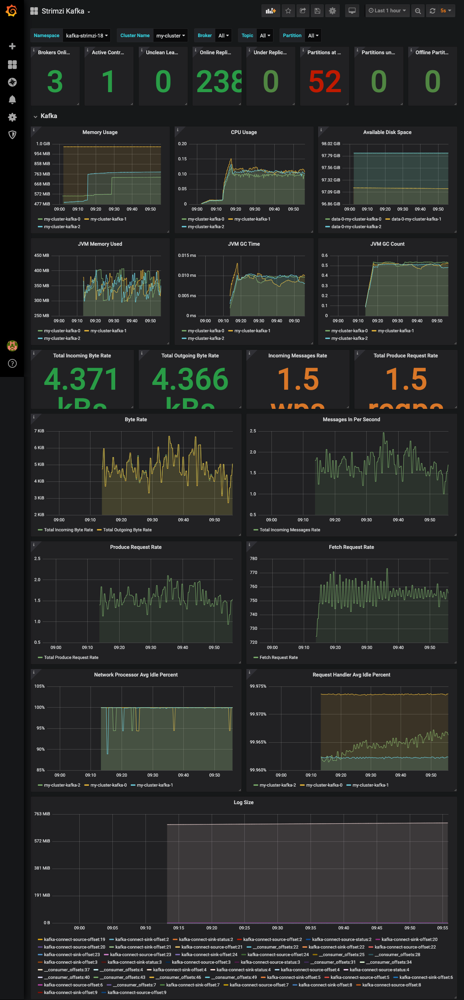

Setup
https://strimzi.io/quickstarts/
Versions
https://strimzi.io/docs/operators/in-development/full/deploying.html#ref-kafka-versions-str
| Kafka version | InterBroker protocol version | Log message format version | ZooKeeper version |
|---|---|---|---|
| 2.7.0 | 2.7 | 2.7 | 3.5.8 |
| 2.7.1 | 2.7 | 2.7 | 3.5.9 |
| 2.8.0 | 2.8 | 2.8 | 3.5.9 |
Prepare new Strimzi version
Download strimzi-x.xx.x.zip from https://github.com/strimzi/strimzi-kafka-operator/releases
- Put it under
cluster-operator/baseand unzip. (excludedocs) - Create
cluster-operator/base/strimzi-x.xx.x/kustomization.yaml. - Create
cluster-operator/overlays/<younamespace>. - Add
rolebinding+clusterrolebindingto overwritenamespace.sed -i 's/namespace: .*/namespace: <yournamespace>/' cluster-operator/overlays/<yournamespace>/cluster-operator/*RoleBinding*.yaml
Strimzi Operator
prepare strimzi operator
namespace:kafka
kubectl apply -f namespace.yaml
kubectl apply -k cluster-operator/overlays/kafka
kubectl get po -n kafka
NAME READY STATUS RESTARTS AGE
strimzi-cluster-operator-6948f4dc6-br56b 1/1 Running 0 2m51s
Kafka Cluster, KafkaTopic, and KafkaUser
- cluster name:
my-cluster namespace:kafka
kubectl apply -k kafka-cluster
namespace=kafka
1. Check Kafka cluster
```
NAME READY STATUS RESTARTS AGE
my-cluster-entity-operator-b74545ccb-2rww6 3/3 Running 0 74s
my-cluster-kafka-0 1/1 Running 0 109s
my-cluster-kafka-1 1/1 Running 0 109s
my-cluster-kafka-2 1/1 Running 0 109s
my-cluster-zookeeper-0 1/1 Running 0 2m13s
strimzi-cluster-operator-6948f4dc6-br56b 1/1 Running 0 8m45s
```
-
KafkaTopic
Example: https://github.com/strimzi/strimzi-kafka-operator/blob/master/examples/topic/kafka-topic.yaml
kubectl get KafkaTopic -n $namespace NAME CLUSTER PARTITIONS REPLICATION FACTOR READY consumer-offsets---84e7a678d08f4bd226872e5cdd4eb527fadc1c6a my-cluster 50 1 True my-topic my-cluster 1 1 True strimzi-store-topic---effb8e3e057afce1ecf67c3f5d8e4e3ff177fc55 my-cluster 1 3 True strimzi-topic-operator-kstreams-topic-store-changelog---b75e702040b99be8a9263134de3507fc0cc4017b my-cluster 1 1 True -
KafkaUser
Example: https://github.com/strimzi/strimzi-kafka-operator/blob/master/examples/user/kafka-user.yaml
kubectl get KafkaUser -n $namespace No resources found in kafka namespace.
Test with console-producer & console-consumer
-
Set
namespace=kafka -
producer:
kubectl -n $namespace run kafka-producer -ti --image=quay.io/strimzi/kafka:0.24.0-kafka-2.8.0 --rm=true --restart=Never -- bin/kafka-console-producer.sh --broker-list my-cluster-kafka-bootstrap:9092 --topic my-topic If you don't see a command prompt, try pressing enter. >test >test2 >^Cpod "kafka-producer" deleted pod kafka/kafka-producer terminated (Error) -
consumer:
kubectl -n $namespace run kafka-consumer -ti --image=quay.io/strimzi/kafka:0.24.0-kafka-2.8.0 --rm=true --restart=Never -- bin/kafka-console-consumer.sh --bootstrap-server my-cluster-kafka-bootstrap:9092 --topic my-topic --from-beginning If you don't see a command prompt, try pressing enter. test test2 ^CProcessed a total of 3 messages pod "kafka-consumer" deleted pod kafka/kafka-consumer terminated (Error)
KafkaConnect
https://strimzi.io/docs/0.16.2/full.html#deploying-kafka-connect-str
annotations:
strimzi.io/use-connector-resources: "true" # to enable connector resource
overlays/kafka-strimzi-18/connect/source/connect-source.yaml
verlays/kafka-strimzi-18/connect/source/my-source-connector.yaml
kubectl get KafkaConnect
NAME DESIRED REPLICAS
kafka-connect-source 2
kubectl get KafkaConnector
NAME AGE
my-source-connector 9m2s
Check the message
kubectl run kafka-consumer -ti --image=strimzi/kafka:0.18.0-kafka-2.5.0 --rm=true --restart=Never -- bin/kafka-console-consumer.sh --bootstrap-server my-cluster-kafka-bootstrap:9092 --topic my-topic --from-beginning
If you don't see a command prompt, try pressing enter.
OpenJDK 64-Bit Server VM warning: If the number of processors is expected to increase from one, then you should configure the number of parallel GC threads appropriately using -XX:ParallelGCThreads=N
""
" Apache License"
" Version 2.0, January 2004"
" http://www.apache.org/licenses/"
""
" TERMS AND CONDITIONS FOR USE, REPRODUCTION, AND DISTRIBUTION"
""
...
kubectl run kafka-consumer -ti --image=strimzi/kafka:0.18.0-kafka-2.5.0 --rm=true --restart=Never -- bin/kafka-console-consumer.sh --bootstrap-server my-cluster-kafka-bootstrap:9092 --topic twitter --from-beginning
{"schema":{"type":"struct","fields":[{"type":"int64","optional":false,"field":"id"},{"type":"string","optional":true,"field":"created_at"},{"type":"struct","fields":[{"type":"int64","optional":false,"field":"id"},{"type":"string","optional":true,"field":"name"},{"type":"string","optional":true,"field":"screen_name"},{"type":"string","optional":true,"field":"location"},{"type":"boolean","optional":false,"field":"verified"},{"type":"int32","optional":false,"field":"friends_count"},{"type":"int32","optional":false,"field":"followers_count"},{"type":"int32","optional":false,"field":"statuses_count"}],"optional":false,"name":"com.eneco.trading.kafka.connect.twitter.User","field":"user"},{"type":"string","optional":true,"field":"text"},{"type":"string","optional":true,"field":"lang"},{"type":"boolean","optional":false,"field":"is_retweet"},{"type":"struct","fields":[{"type":"array","items":{"type":"struct","fields":[{"type":"string","optional":true,"field":"text"}],"optional":false,"name":"com.eneco.trading.kafka.connect.twitter.Hashtag"},"optional":true,"field":"hashtags"},{"type":"array","items":{"type":"struct","fields":[{"type":"string","optional":true,"field":"display_url"},{"type":"string","optional":true,"field":"expanded_url"},{"type":"int64","optional":false,"field":"id"},{"type":"string","optional":true,"field":"type"},{"type":"string","optional":true,"field":"url"}],"optional":false,"name":"com.eneco.trading.kafka.connect.twitter.Medium"},"optional":true,"field":"media"},{"type":"array","items":{"type":"struct","fields":[{"type":"string","optional":true,"field":"display_url"},{"type":"string","optional":true,"field":"expanded_url"},{"type":"string","optional":true,"field":"url"}],"optional":false,"name":"com.eneco.trading.kafka.connect.twitter.Url"},"optional":true,"field":"urls"},{"type":"array","items":{"type":"struct","fields":[{"type":"int64","optional":false,"field":"id"},{"type":"string","optional":true,"field":"name"},{"type":"string","optional":true,"field":"screen_name"}],"optional":false,"name":"com.eneco.trading.kafka.connect.twitter.UserMention"},"optional":true,"field":"user_mentions"}],"optional":false,"name":"com.eneco.trading.kafka.connect.twitter.Entities","field":"entities"}],"optional":false,"name":"com.eneco.trading.kafka.connect.twitter.Tweet"},"payload":{"id":1290101985916592128,"created_at":"2020-08-03T01:47:37.000+0000","user":{"id":2901232483,"name":"Keryi\uD83E\uDD8B","screen_name":"keryikeryi","location":"Seattle, WA","verified":false,"friends_count":153,"followers_count":222,"statuses_count":13157},"text":"RT @LilNasX: corona is that nigga who already graduated but won’t stop coming up to the school","lang":"en","is_retweet":true,"entities":{"hashtags":[],"media":[],"urls":[],"user_mentions":[{"id":754006735468261376,"name":"nope","screen_name":"LilNasX"}]}}}
^CProcessed a total of 1056 messages
Enable the Cluster Operator to watch multiple namespaces
https://strimzi.io/docs/0.16.2/full.html#deploying-cluster-operator-to-watch-multiple-namespacesstr
Change STRIMZI_NAMESPACE
TO update STRIMZI_NAMESPACE, add a patch yaml and include it in kustomization.yaml in kafka-strimzi-18 (Reference: Kustomize でマニフェストのフィールドを削除する)
apiVersion: apps/v1
kind: Deployment
metadata:
name: strimzi-cluster-operator
spec:
template:
spec:
serviceAccountName: strimzi-cluster-operator
containers:
- name: strimzi-cluster-operator
env:
- name: STRIMZI_NAMESPACE
value: kafka-strimzi-18,kafka-strimzi-18-staging
valueFrom: null
Diff
kubectl diff -k overlays/kafka-strimzi-18
- generation: 1
+ generation: 2
labels:
app: strimzi
name: strimzi-cluster-operator
@@ -36,10 +36,7 @@
- /opt/strimzi/bin/cluster_operator_run.sh
env:
- name: STRIMZI_NAMESPACE
- valueFrom:
- fieldRef:
- apiVersion: v1
- fieldPath: metadata.namespace
+ value: kafka-strimzi-18,kafka-strimzi-18-staging
- name: STRIMZI_FULL_RECONCILIATION_INTERVAL_MS
Apply
kubectl apply -k overlays/kafka-strimzi-18
customresourcedefinition.apiextensions.k8s.io/kafkabridges.kafka.strimzi.io unchanged
customresourcedefinition.apiextensions.k8s.io/kafkaconnectors.kafka.strimzi.io unchanged
customresourcedefinition.apiextensions.k8s.io/kafkaconnects.kafka.strimzi.io unchanged
customresourcedefinition.apiextensions.k8s.io/kafkaconnects2is.kafka.strimzi.io unchanged
customresourcedefinition.apiextensions.k8s.io/kafkamirrormaker2s.kafka.strimzi.io unchanged
customresourcedefinition.apiextensions.k8s.io/kafkamirrormakers.kafka.strimzi.io unchanged
customresourcedefinition.apiextensions.k8s.io/kafkarebalances.kafka.strimzi.io unchanged
customresourcedefinition.apiextensions.k8s.io/kafkas.kafka.strimzi.io unchanged
customresourcedefinition.apiextensions.k8s.io/kafkatopics.kafka.strimzi.io unchanged
customresourcedefinition.apiextensions.k8s.io/kafkausers.kafka.strimzi.io unchanged
serviceaccount/strimzi-cluster-operator unchanged
clusterrole.rbac.authorization.k8s.io/strimzi-cluster-operator-global unchanged
clusterrole.rbac.authorization.k8s.io/strimzi-cluster-operator-namespaced unchanged
clusterrole.rbac.authorization.k8s.io/strimzi-entity-operator unchanged
clusterrole.rbac.authorization.k8s.io/strimzi-kafka-broker unchanged
clusterrole.rbac.authorization.k8s.io/strimzi-topic-operator unchanged
rolebinding.rbac.authorization.k8s.io/strimzi-cluster-operator-entity-operator-delegation unchanged
rolebinding.rbac.authorization.k8s.io/strimzi-cluster-operator-topic-operator-delegation unchanged
rolebinding.rbac.authorization.k8s.io/strimzi-cluster-operator unchanged
clusterrolebinding.rbac.authorization.k8s.io/strimzi-cluster-operator-kafka-broker-delegation unchanged
clusterrolebinding.rbac.authorization.k8s.io/strimzi-cluster-operator unchanged
deployment.apps/strimzi-cluster-operator configured
kafka.kafka.strimzi.io/my-cluster unchanged
RoleBinding & ClusterRoleBinding
Copy RoleBinding from kafka-strimzi-18
mkdir -p overlays/kafka-strimzi-18-staging/strimzi-0.18.0/install/cluster-operator
cp overlays/kafka-strimzi-18/strimzi-0.18.0/install/cluster-operator/*-RoleBinding*yaml overlays/kafka-strimzi-18-staging/strimzi-0.18.0/install/cluster-operator
Apply
kubectl apply -k overlays/kafka-strimzi-18-staging
rolebinding.rbac.authorization.k8s.io/strimzi-cluster-operator-entity-operator-delegation created
rolebinding.rbac.authorization.k8s.io/strimzi-cluster-operator-topic-operator-delegation created
rolebinding.rbac.authorization.k8s.io/strimzi-cluster-operator created
Kafka Cluster
Prepare my-cluster.yaml and add it to kustomization.yaml
cp overlays/kafka-strimzi-18/my-cluster.yaml overlays/kafka-strimzi-18-staging
Apply
kubectl apply -k overlays/kafka-strimzi-18-staging
rolebinding.rbac.authorization.k8s.io/strimzi-cluster-operator-entity-operator-delegation unchanged
rolebinding.rbac.authorization.k8s.io/strimzi-cluster-operator-topic-operator-delegation unchanged
rolebinding.rbac.authorization.k8s.io/strimzi-cluster-operator unchanged
kafka.kafka.strimzi.io/my-cluster created
Check
kubectl get pod -n $namespace-staging
NAME READY STATUS RESTARTS AGE
my-cluster-entity-operator-fd45b849f-9vk62 3/3 Running 0 59s
my-cluster-kafka-0 2/2 Running 0 2m23s
my-cluster-zookeeper-0 1/1 Running 0 3m19s
Kafka MirrorMaker
Prerequisite:
- Run multiple clusters
kubectl apply -k strimzi/overlays/kafka-strimzi-18-staging
kubectl get KafkaTopic -n kafka-strimzi-18-staging
NAME PARTITIONS REPLICATION FACTOR
consumer-offsets---84e7a678d08f4bd226872e5cdd4eb527fadc1c6a 50 1
heartbeats 1 1
mirrormaker2-cluster-configs 1 1
mirrormaker2-cluster-offsets 25 1
mirrormaker2-cluster-status 5 1
my-cluster-source.checkpoints.internal 1 1
my-cluster-source.kafka-connect-sink-config 1 1
my-cluster-source.kafka-connect-sink-offset 25 1
my-cluster-source.kafka-connect-sink-status 5 1
my-cluster-source.kafka-connect-source-config 1 1
my-cluster-source.kafka-connect-source-offset 25 1
my-cluster-source.kafka-connect-source-status 5 1
my-cluster-source.my-topic 1 1
my-cluster-source.twitter 1 1

check
kubectl -n kafka-strimzi-18-staging run kafka-consumer -ti --image=strimzi/kafka:0.18.0-kafka-2.5.0 --rm=true --restart=Never -- bin/kafka-console-consumer.sh --bootstrap-server my-cluster-kafka-bootstrap:9092 --topic my-cluster-source.twitter
If you don't see a command prompt, try pressing enter.
{"schema":{"type":"struct","fields":[{"type":"int64","optional":false,"field":"id"},{"type":"string","optional":true,"field":"created_at"},{"type":"struct","fields":[{"type":"int64","optional":false,"field":"id"},{"type":"string","optional":true,"field":"name"},{"type":"string","optional":true,"field":"screen_name"},{"type":"string","optional":true,"field":"location"},{"type":"boolean","optional":false,"field":"verified"},{"type":"int32","optional":false,"field":"friends_count"},{"type":"int32","optional":false,"field":"followers_count"},{"type":"int32","optional":false,"field":"statuses_count"}],"optional":false,"name":"com.eneco.trading.kafka.connect.twitter.User","field":"user"},{"type":"string","optional":true,"field":"text"},{"type":"string","optional":true,"field":"lang"},{"type":"boolean","optional":false,"field":"is_retweet"},{"type":"struct","fields":[{"type":"array","items":{"type":"struct","fields":[{"type":"string","optional":true,"field":"text"}],"optional":false,"name":"com.eneco.trading.kafka.connect.twitter.Hashtag"},"optional":true,"field":"hashtags"},{"type":"array","items":{"type":"struct","fields":[{"type":"string","optional":true,"field":"display_url"},{"type":"string","optional":true,"field":"expanded_url"},{"type":"int64","optional":false,"field":"id"},{"type":"string","optional":true,"field":"type"},{"type":"string","optional":true,"field":"url"}],"optional":false,"name":"com.eneco.trading.kafka.connect.twitter.Medium"},"optional":true,"field":"media"},{"type":"array","items":{"type":"struct","fields":[{"type":"string","optional":true,"field":"display_url"},{"type":"string","optional":true,"field":"expanded_url"},{"type":"string","optional":true,"field":"url"}],"optional":false,"name":"com.eneco.trading.kafka.connect.twitter.Url"},"optional":true,"field":"urls"},{"type":"array","items":{"type":"struct","fields":[{"type":"int64","optional":false,"field":"id"},{"type":"string","optional":true,"field":"name"},{"type":"string","optional":true,"field":"screen_name"}],"optional":false,"name":"com.eneco.trading.kafka.connect.twitter.UserMention"},"optional":true,"field":"user_mentions"}],"optional":false,"name":"com.eneco.trading.kafka.connect.twitter.Entities","field":"entities"}],"optional":false,"name":"com.eneco.trading.kafka.connect.twitter.Tweet"},"payload":{"id":1293333835531329545,"created_at":"2020-08-11T23:49:50.000+0000","user":{"id":1129412194779766784,"name":"Mizibak \uD83C\uDDEC\uD83C\uDDE7","screen_name":"mizibak","location":null,"verified":false,"friends_count":1022,"followers_count":675,"statuses_count":25644},"text":"RT @NeuroNerd78: Take a strain of viruses that are abundant,Corona for example,say a new one has emerged, give it a name,apply a list of sy…","lang":"en","is_retweet":true,"entities":{"hashtags":[],"media":[],"urls":[],"user_mentions":[{"id":1182033581755031552,"name":"Angie \uD83D\uDC1DOverlord of the Wasps\uD83D\uDC1D","screen_name":"NeuroNerd78"}]}}}
{"schema":{"type":"struct","fields":[{"type":"int64","optional":false,"field":"id"},{"type":"string","optional":true,"field":"created_at"},{"type":"struct","fields":[{"type":"int64","optional":false,"field":"id"},{"type":"string","optional":true,"field":"name"},{"type":"string","optional":true,"field":"screen_name"},{"type":"string","optional":true,"field":"location"},{"type":"boolean","optional":false,"field":"verified"},{"type":"int32","optional":false,"field":"friends_count"},{"type":"int32","optional":false,"field":"followers_count"},{"type":"int32","optional":false,"field":"statuses_count"}],"optional":false,"name":"com.eneco.trading.kafka.connect.twitter.User","field":"user"},{"type":"string","optional":true,"field":"text"},{"type":"string","optional":true,"field":"lang"},{"type":"boolean","optional":false,"field":"is_retweet"},{"type":"struct","fields":[{"type":"array","items":{"type":"struct","fields":[{"type":"string","optional":true,"field":"text"}],"optional":false,"name":"com.eneco.trading.kafka.connect.twitter.Hashtag"},"optional":true,"field":"hashtags"},{"type":"array","items":{"type":"struct","fields":[{"type":"string","optional":true,"field":"display_url"},{"type":"string","optional":true,"field":"expanded_url"},{"type":"int64","optional":false,"field":"id"},{"type":"string","optional":true,"field":"type"},{"type":"string","optional":true,"field":"url"}],"optional":false,"name":"com.eneco.trading.kafka.connect.twitter.Medium"},"optional":true,"field":"media"},{"type":"array","items":{"type":"struct","fields":[{"type":"string","optional":true,"field":"display_url"},{"type":"string","optional":true,"field":"expanded_url"},{"type":"string","optional":true,"field":"url"}],"optional":false,"name":"com.eneco.trading.kafka.connect.twitter.Url"},"optional":true,"field":"urls"},{"type":"array","items":{"type":"struct","fields":[{"type":"int64","optional":false,"field":"id"},{"type":"string","optional":true,"field":"name"},{"type":"string","optional":true,"field":"screen_name"}],"optional":false,"name":"com.eneco.trading.kafka.connect.twitter.UserMention"},"optional":true,"field":"user_mentions"}],"optional":false,"name":"com.eneco.trading.kafka.connect.twitter.Entities","field":"entities"}],"optional":false,"name":"com.eneco.trading.kafka.connect.twitter.Tweet"},"payload":{"id":1293333835531329545,"created_at":"2020-08-11T23:49:50.000+0000","user":{"id":1129412194779766784,"name":"Mizibak \uD83C\uDDEC\uD83C\uDDE7","screen_name":"mizibak","location":null,"verified":false,"friends_count":1022,"followers_count":675,"statuses_count":25644},"text":"RT @NeuroNerd78: Take a strain of viruses that are abundant,Corona for example,say a new one has emerged, give it a name,apply a list of sy…","lang":"en","is_retweet":true,"entities":{"hashtags":[],"media":[],"urls":[],"user_mentions":[{"id":1182033581755031552,"name":"Angie \uD83D\uDC1DOverlord of the Wasps\uD83D\uDC1D","screen_name":"NeuroNerd78"}]}}}
^CProcessed a total of 2 messages
pod "kafka-consumer" deleted
pod kafka-strimzi-18-staging/kafka-consumer terminated (Error)
Monitoring
KafkaExporterin Kafka -> kafka-exporter-configurationmetricsinkafkaandzookeepercontainer -> kafka-metrics.yaml- Deploying the CoreOS Prometheus Operator
- Grafana Dashboards:
cluster-operator/base/strimzi-0.24.0/examples/metrics/grafana-dashboards
Prometheus
-
Deploy operator
git clone https://github.com/coreos/kube-prometheus && cd kube-prometheus kubectl apply -f manifests/setup -
Deploy resources
kubectl apply -f manifests<!--
Prometheus(the namespace Prometheus is going to be installed into)curl -s https://raw.githubusercontent.com/strimzi/strimzi-kafka-operator/master/examples/metrics/prometheus-install/prometheus.yaml | sed 's/namespace: .*/namespace: monitoring/' > strimzi/monitoring/prometheus.yaml--> -
Deploy
PodMonitorUpdate namespace with the one where the pods to scrape the metrics from are running
curl -s https://raw.githubusercontent.com/strimzi/strimzi-kafka-operator/master/examples/metrics/prometheus-install/strimzi-pod-monitor.yaml | sed 's/myproject/kafka-strimzi-18/' > strimzi/monitoring/strimzi-pod-monitor.yamlkubectl apply -f strimzi/monitoring/strimzi-pod-monitor.yaml -n monitoring -
Deploy
PrometheusRuleandprometheus-additonal-config(TBD)curl -s https://raw.githubusercontent.com/strimzi/strimzi-kafka-operator/master/examples/metrics/prometheus-install/prometheus-rules.yaml > strimzi/monitoring/prometheus-rules.yamlcurl -s https://raw.githubusercontent.com/strimzi/strimzi-kafka-operator/master/examples/metrics/prometheus-additional-properties/prometheus-additional.yaml > strimzi/monitoring/prometheus-additional.yaml kubectl create secret generic additional-scrape-configs --from-file=strimzi/monitoring/prometheus-additional.yaml -n monitoring# kubectl apply -f strimzi/monitoring/prometheus-rules.yaml -n monitoring # kubectl apply -f strimzi/monitoring/prometheus.yaml -n monitoring -
Add the
podMonitorSelectortoPrometheusbykubectl edit Prometheus -n monitoringpodMonitorSelector: matchLabels: app: strimzi -
Update service account
prometheus-k8sto add the followings:kubectl edit clusterrole prometheus-k8s -o yaml- apiGroups: [""] resources: - nodes - nodes/proxy - services - endpoints - pods verbs: ["get", "list", "watch"] - apiGroups: - extensions resources: - ingresses verbs: ["get", "list", "watch"] - nonResourceURLs: ["/metrics"] verbs: ["get"]
Alertmanager (TBD)
curl -s https://raw.githubusercontent.com/strimzi/strimzi-kafka-operator/master/examples/metrics/prometheus-install/alert-manager.yaml > strimzi/monitoring/alert-manager.yaml
curl -s https://raw.githubusercontent.com/strimzi/strimzi-kafka-operator/master/examples/metrics/prometheus-alertmanager-config/alert-manager-config.yaml > strimzi/monitoring/alert-manager-config.yaml
Change slack_api_url
kubectl create secret generic alertmanager-alertmanager --from-file=alertmanager.yaml=strimzi/monitoring/alert-manager-config.yaml -n monitoring
kubectl apply -f strimzi/monitoring/alert-manager.yaml -n monitoring
Grafana
Import dashoboard

Authentication & Authorization
- Mutual TLS authentication
- The client supports authenticaton using mutual TLS authentication
- It is necessary to ue the TLS certificates rather than passwords
- You can reconfigure and restart client applications periodically so that they do not use expired certificates
- SCRAM-SHA(Salted Challenge Response Authenticatoin Mechanism) authentication
- Support
SCRAM-SHA-512only. - The client supports authentication using SCRAM-SHA-512
- It is necessary to use passwords rather than the TLS certificates
- Authentication for unencrypted communication is required
- Support
- no
authenticationproperty -> not authenticate
debug
KafkaConnector fails to join group
2020-08-02 02:54:06,347 INFO [Worker clientId=connect-1, groupId=kafka-connect-source] Join group failed with org.apache.kafka.common.errors.MemberIdRequiredException: The group member needs to have a valid member id before actually entering a consumer group (org.apache.kafka.clients.consumer.internals.AbstractCoordinator) [DistributedHerder-connect-1-1]
Connector was old.
KafkaConnector Elasticsearch fails
"java.lang.NoClassDefFoundError: com/google/common/collect/ImmutableSet\n\tat
io.searchbox.client.AbstractJestClient.<init>(AbstractJestClient.java:38)\n\tat
io.searchbox.client.http.JestHttpClient.<init>(JestHttpClient.java:43)\n\tat
io.searchbox.client.JestClientFactory.getObject(JestClientFactory.java:51)\n\tat
io.confluent.connect.elasticsearch.jest.JestElasticsearchClient.<init>(JestElasticsearchClient.java:150)\n\tat
io.confluent.connect.elasticsearch.jest.JestElasticsearchClient.<init>(JestElasticsearchClient.java:142)\n\tat
io.confluent.connect.elasticsearch.ElasticsearchSinkTask.start(ElasticsearchSinkTask.java:122)\n\tat
io.confluent.connect.elasticsearch.ElasticsearchSinkTask.start(ElasticsearchSinkTask.java:51)\n\tat
org.apache.kafka.connect.runtime.WorkerSinkTask.initializeAndStart(WorkerSinkTask.java:305)\n\tat
org.apache.kafka.connect.runtime.WorkerSinkTask.execute(WorkerSinkTask.java:193)\n\tat
org.apache.kafka.connect.runtime.WorkerTask.doRun(WorkerTask.java:184)\n\tat
org.apache.kafka.connect.runtime.WorkerTask.run(WorkerTask.java:234)\n\tat
java.util.concurrent.Executors$RunnableAdapter.call(Executors.java:511)\n\tat
java.util.concurrent.FutureTask.run(FutureTask.java:266)\n\tat java.util.concurrent.ThreadPoolExecutor.runWorker(ThreadPoolExecutor.java:1149)\n\tat
java.util.concurrent.ThreadPoolExecutor$Worker.run(ThreadPoolExecutor.java:624)\n\tat
java.lang.Thread.run(Thread.java:748)\nCaused by: java.lang.ClassNotFoundException:
com.google.common.collect.ImmutableSet\n\tat java.net.URLClassLoader.findClass(URLClassLoader.java:382)\n\tat
java.lang.ClassLoader.loadClass(ClassLoader.java:418)\n\tat org.apache.kafka.connect.runtime.isolation.PluginClassLoader.loadClass(PluginClassLoader.java:104)\n\tat
java.lang.ClassLoader.loadClass(ClassLoader.java:351)\n\t... 16 more\n"
Need to add gua
Kafka Connect Elasticsearch fails
org.apache.kafka.connect.errors.ConnectException: Couldn't start ElasticsearchSinkTask due to connection error:
at io.confluent.connect.elasticsearch.jest.JestElasticsearchClient.<init>(JestElasticsearchClient.java:159)
at io.confluent.connect.elasticsearch.jest.JestElasticsearchClient.<init>(JestElasticsearchClient.java:142)
at io.confluent.connect.elasticsearch.ElasticsearchSinkTask.start(ElasticsearchSinkTask.java:122)
at io.confluent.connect.elasticsearch.ElasticsearchSinkTask.start(ElasticsearchSinkTask.java:51)
at org.apache.kafka.connect.runtime.WorkerSinkTask.initializeAndStart(WorkerSinkTask.java:305)
at org.apache.kafka.connect.runtime.WorkerSinkTask.execute(WorkerSinkTask.java:193)
at org.apache.kafka.connect.runtime.WorkerTask.doRun(WorkerTask.java:184)
at org.apache.kafka.connect.runtime.WorkerTask.run(WorkerTask.java:234)
at java.util.concurrent.Executors.call(Executors.java:511)
at java.util.concurrent.FutureTask.run(FutureTask.java:266)
at java.util.concurrent.ThreadPoolExecutor.runWorker(ThreadPoolExecutor.java:1149)
at java.util.concurrent.ThreadPoolExecutor.run(ThreadPoolExecutor.java:624)
at java.lang.Thread.run(Thread.java:748)
Caused by: javax.net.ssl.SSLHandshakeException: sun.security.validator.ValidatorException: PKIX path building failed: sun.security.provider.certpath.SunCertPathBuilderException: unable to find valid certification path to requested target
at sun.security.ssl.Alerts.getSSLException(Alerts.java:198)
at sun.security.ssl.SSLSocketImpl.fatal(SSLSocketImpl.java:1967)
at sun.security.ssl.Handshaker.fatalSE(Handshaker.java:331)
at sun.security.ssl.Handshaker.fatalSE(Handshaker.java:325)
at sun.security.ssl.ClientHandshaker.serverCertificate(ClientHandshaker.java:1688)
at sun.security.ssl.ClientHandshaker.processMessage(ClientHandshaker.java:226)
at sun.security.ssl.Handshaker.processLoop(Handshaker.java:1082)
at sun.security.ssl.Handshaker.process_record(Handshaker.java:1010)
at sun.security.ssl.SSLSocketImpl.readRecord(SSLSocketImpl.java:1079)
at sun.security.ssl.SSLSocketImpl.performInitialHandshake(SSLSocketImpl.java:1388)
at sun.security.ssl.SSLSocketImpl.startHandshake(SSLSocketImpl.java:1416)
at sun.security.ssl.SSLSocketImpl.startHandshake(SSLSocketImpl.java:1400)
at org.apache.http.conn.ssl.SSLConnectionSocketFactory.createLayeredSocket(SSLConnectionSocketFactory.java:396)
at org.apache.http.conn.ssl.SSLConnectionSocketFactory.connectSocket(SSLConnectionSocketFactory.java:355)
at org.apache.http.impl.conn.DefaultHttpClientConnectionOperator.connect(DefaultHttpClientConnectionOperator.java:142)
at org.apache.http.impl.conn.PoolingHttpClientConnectionManager.connect(PoolingHttpClientConnectionManager.java:359)
at org.apache.http.impl.execchain.MainClientExec.establishRoute(MainClientExec.java:381)
at org.apache.http.impl.execchain.MainClientExec.execute(MainClientExec.java:237)
at org.apache.http.impl.execchain.ProtocolExec.execute(ProtocolExec.java:185)
at org.apache.http.impl.execchain.RetryExec.execute(RetryExec.java:89)
at org.apache.http.impl.execchain.RedirectExec.execute(RedirectExec.java:111)
at org.apache.http.impl.client.InternalHttpClient.doExecute(InternalHttpClient.java:185)
at org.apache.http.impl.client.CloseableHttpClient.execute(CloseableHttpClient.java:83)
at io.searchbox.client.http.JestHttpClient.executeRequest(JestHttpClient.java:133)
at io.searchbox.client.http.JestHttpClient.execute(JestHttpClient.java:70)
at io.searchbox.client.http.JestHttpClient.execute(JestHttpClient.java:63)
at io.confluent.connect.elasticsearch.jest.JestElasticsearchClient.getServerVersion(JestElasticsearchClient.java:247)
at io.confluent.connect.elasticsearch.jest.JestElasticsearchClient.<init>(JestElasticsearchClient.java:151)
... 12 more
Caused by: sun.security.validator.ValidatorException: PKIX path building failed: sun.security.provider.certpath.SunCertPathBuilderException: unable to find valid certification path to requested target
at sun.security.validator.PKIXValidator.doBuild(PKIXValidator.java:450)
at sun.security.validator.PKIXValidator.engineValidate(PKIXValidator.java:317)
at sun.security.validator.Validator.validate(Validator.java:262)
at sun.security.ssl.X509TrustManagerImpl.validate(X509TrustManagerImpl.java:330)
at sun.security.ssl.X509TrustManagerImpl.checkTrusted(X509TrustManagerImpl.java:237)
at sun.security.ssl.X509TrustManagerImpl.checkServerTrusted(X509TrustManagerImpl.java:132)
at sun.security.ssl.ClientHandshaker.serverCertificate(ClientHandshaker.java:1670)
... 35 more
Caused by: sun.security.provider.certpath.SunCertPathBuilderException: unable to find valid certification path to requested target
at sun.security.provider.certpath.SunCertPathBuilder.build(SunCertPathBuilder.java:141)
at sun.security.provider.certpath.SunCertPathBuilder.engineBuild(SunCertPathBuilder.java:126)
at java.security.cert.CertPathBuilder.build(CertPathBuilder.java:280)
at sun.security.validator.PKIXValidator.doBuild(PKIXValidator.java:445)
... 41 more
reference
- Custom image for KafkaConnect: https://strimzi.io/docs/operators/0.18.0/using.html#creating-new-image-from-base-str
- https://github.com/nakamasato/kafka-connect